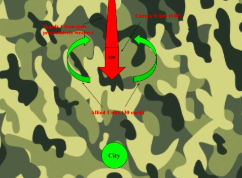
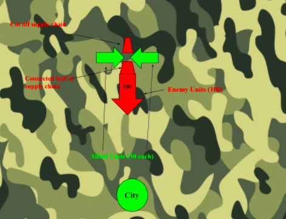
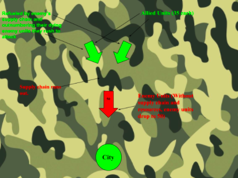
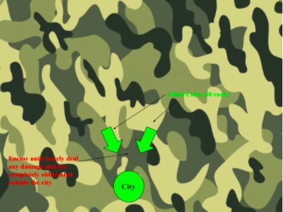

As you can see in the diagram above a very dire situation is portrayed. You're attempting to defend a key city in your territory, with only 60% of your enemies troops. However, being deep into enemy territory they need a supply line so they have food, fuel and resources to continue their advance.
So instead of directly engaging the enemy who completely outnumber and outgear them they choose to move from the sides, straight towards the supply lines.
The troops converge on the weekly guarded supply line, not only strangling the enemy and denying them resources but also empowering themselves by using the enemies resources for themselves. The enemy continues their advance with a few supplies left
The enemy has used up all of its remaining supplies at this point, and their only hope is to make it to the city and restock. However lacking fuel, food and other supplies they have gone from a value of 100 to only 50 having to abandon tanks and men. However the Allied forces are capable of moving much faster and with a lot more resources, and they race towards the enemy
By the time that the allied forces catch up to the enemy forces the enemy is nearly dead, but is also right outside the city. Unfortunately for them the allied forces completely obliterate them in the following battle, with minimum casualties